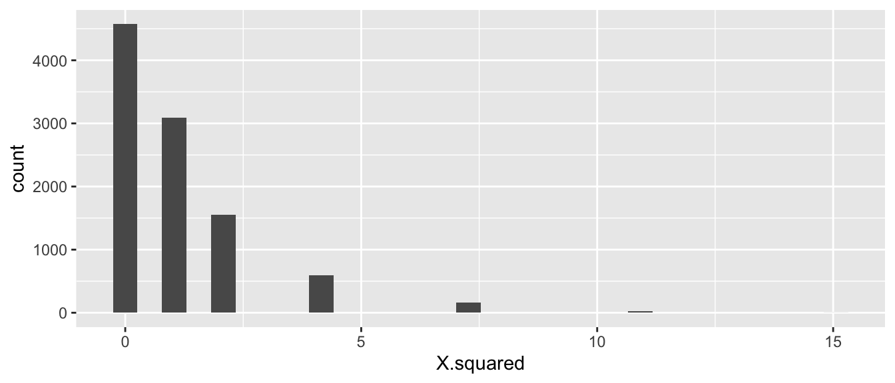
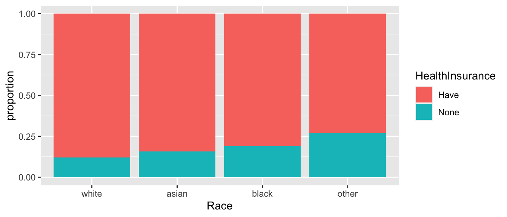

Chapter 11 Contingency Tables
We are often interested in experiments and studies where the response variable is categorical and so is the explanatory.
Treat plots with either Type A or Type B insecticides and after 2 weeks observe if the plots are infested or not infested with some insect.
Using survey data, we would like to investigate if there is a relationship between Gender and Political Party affiliation. (Are women more likely to be Democrats?)
Are children that are born second or third (or more!) more likely to be gay than the firstborn child?
We will be interested in testing the null hypothesis of “No association” between the explanatory and response variable.
We will have two questions:
What statistic could be calculated from the observed data to measure how far the observed data is from the null hypothesis?
Given the statistic in part 1, how should it vary from sample to sample assuming the null hypothesis (no difference in treatments) is true?
11.1 Expected Counts
We will develop our ideas using a sub-sample of data from surveys of undergraduate students in an Introductory statistics course. We will utilize \(40\) males and \(40\) females and consider the historical assumption that women should perform better on the verbal part of the SAT rather than the MATH part compared to their male counterparts.
data(StudentSurvey, package='Lock5Data')
StudentSurvey <- StudentSurvey %>%
filter( HigherSAT != '') %>% # remove a student that did not report SAT scores
mutate(HigherSAT = factor(HigherSAT)) %>% # remove the MISSING level from the above student
group_by(Gender) %>% # Only consider the first 40 males
slice(1:40) %>% # and Females... as a first example
select(Gender, HigherSAT) In this example, exactly \(60\%\) of the students had a higher score on the math portion of the SAT than on the verbal. If the null hypothesis is true, then \(60\%\) of the \(40\) males should have a higher Math SAT score than verbal. So under the null, we expect to see \(40 * 0.60 = 24\) males and \(40*0.60=24\) females to have a higher Math SAT than verbal. Similarly we would expect \(40*0.40=16\) males and \(16\) females to score higher on the verbal section. Below is a table that summarizes both our observed data and the expected values under the null hypotheses of no association between superior SAT category with gender.
## Registered S3 method overwritten by 'mosaic':
## method from
## fortify.SpatialPolygonsDataFrame ggplot2descr::CrossTable( tab, expected = TRUE,
prop.r = FALSE, prop.c=FALSE, prop.t=FALSE, prop.chisq = FALSE )## Cell Contents
## |-------------------------|
## | N |
## | Expected N |
## |-------------------------|
##
## ============================
## Gender
## HigherSAT F M Total
## ----------------------------
## Math 23 25 48
## 24 24
## ----------------------------
## Verbal 17 15 32
## 16 16
## ----------------------------
## Total 40 40 80
## ============================Notice that the expected cell counts can be written as \[E_{ij} = \frac{ n_{i,\cdot}}{n} * n_{\cdot, j} = \frac{n_{i,\cdot} n_{\cdot,j}}{n}\] where \(n_{i,\cdot}\) is row total for the \(i\)th row, \(n_{\cdot,j}\) is the column total for the \(j\)th row, and \(n\) is the total number of observations in the table.
This is the first case where our test statistic will not be just plugging in the sample statistic into the null hypothesis. Instead we will consider a test statistic that is more flexible and will handle more general cases (say 3 or more response or treatment groups) Our statistic for assessing how far our observed data is from what we expect under the null hypothesis involves the difference between the observed and the expected for each of the cells, but again we don’t want to just sum the differences, instead will make the differences positive by squaring the differences. Second, a difference of 10 between the observed and expected cell count is very different if the number expected is 1000 than if it is 10, so we will scale the observed difference by dividing by the expected cell count.
We define \[\begin{aligned}X^{2} &= \sum_{\textrm{all ij cells}}\frac{\left(O_{ij}-E_{ij}\right)^{2}}{E_{ij}} \\ &= \frac{(23-24)^2}{24} + \frac{(25-24)^2}{24} + \frac{(17-16)^2}{16} + \frac{(15-16)^2}{16} \\ &= 0.04167 + 0.04167 + 0.0625 + 0.0625 \\ &= 0.20834 \end{aligned}\]
In the next section we will address if this test statistic is large enough to reject the null hypothesis.
Example
Researchers suspected that attack of a plant by one organism induce resistance to subsequent attack by a different organism. The \(47\) individually potted cotton plants were randomly allocated to two groups: infestation by spider mites or no infestation. After two weeks the mites were dutifully removed by a conscientious research assistant, and both groups were inoculated with Verticillium, a fungus that causes Wilt disease.
## 'data.frame': 47 obs. of 2 variables:
## $ treatment: Factor w/ 2 levels "mites","no mites": 1 1 1 1 1 1 1 1 1 1 ...
## $ outcome : Factor w/ 2 levels "no wilt","wilt": 2 2 2 2 2 2 2 2 2 2 ...We will summarize the data into a contingency table that counts the number of plants in each treatment/wilt category.
# Using mosaic's tally function
tab <- mosaic::tally(outcome ~ treatment, data=Mites, # table of outcome by treatment
format='count') # give the raw counts, not percentages
tab## treatment
## outcome mites no mites
## no wilt 15 4
## wilt 11 17From this table we can see that \(28\) out of the \(47\) plants wilted, so the proportion that wilted was \(\frac{28}{47}=0.596\). Therefore under the null hypothesis we would expect that \(59.6\%\) of the \(26\) mite treated plants would have wilted, or \[\left( \frac{28}{47} \right) 26 = 15.49\]
Similar calculations reveal the rest of the expected cell counts.
descr::CrossTable( tab, expected = TRUE,
prop.r = FALSE, prop.c=FALSE, prop.t=FALSE, prop.chisq = FALSE )## Cell Contents
## |-------------------------|
## | N |
## | Expected N |
## |-------------------------|
##
## ===================================
## treatment
## outcome mites no mites Total
## -----------------------------------
## no wilt 15 4 19
## 10.5 8.5
## -----------------------------------
## wilt 11 17 28
## 15.5 12.5
## -----------------------------------
## Total 26 21 47
## ===================================Is this data indicative of mites inferring a disease resistance? More formally we are interested in testing
\[H_{0}:\: \pi_{w}=\pi_{w|m}\]
\[H_{0}:\: \pi_{w}\ne\pi_{w|m}\]
where the relevant parameters are \(\pi_{w}\), the probability that a plant will wilt, and \(\pi_{w|m}\), the probability that a plant will wilt given that it has been treated with mites.
We calculate our test statistic as \[\begin{aligned}X^{2} &= \sum_{\textrm{all ij cells}}\frac{\left(O_{ij}-E_{ij}\right)^{2}}{E_{ij}} \\ &= \frac{\left(15-10.51\right)^{2}}{10.51}+\frac{\left(4-8.49\right)^{2}}{8.49}+\frac{\left(11-15.49\right)^{2}}{15.49}+\frac{\left(17-12.51\right)^{2}}{12.51}\\ &= 1.92+2.37+1.30+1.61 \\ &= 7.20 \end{aligned}\]
If the null hypothesis is true, then this statistic should be small, and a large value of the statistic is indicative of the null hypothesis being incorrect. But how large must the statistic be before we reject the null hypothesis?
11.2 Hypothesis Testing
Similarly to the two-sample t-test, we randomly shuffle the treatment assignments and recalculate the statistic many times and examine the sampling distribution of our test statistic, \(X^{2}\).
To do this efficiently, we’ll need a way of easily calculating this test statistic. In a traditional course I would introduce this test by the name of “Pearson’s Chi-squared test” and we can obtain the test statistic using the following code:
# function is chisq.test() and we need to tell it not to do the Yates continuity
# correction and just calculate the test statistic as we've described
chisq.test( table(Mites), correct=FALSE ) # do a Chi-sq test ##
## Pearson's Chi-squared test
##
## data: table(Mites)
## X-squared = 7.2037, df = 1, p-value = 0.007275R is performing the traditional Pearson’s Chi-Squared test which assumes our sample sizes are large enough for several approximations to be good. Fortunately, we don’t care about this approximation to the p-value and will use simulation methods which will be more accurate. In order to use the chisq.test() function to do our calculations, we need to extract the test-statistic from the output of the function.
<<warning=FALSE>>=
# extract the X^2 test statistic from the output
X.sq <- chisq.test( table(Mites), correct=FALSE )$statistic # grab only the test statistic
X.sq## X-squared
## 7.203748Next we wish to repeat our shuffling trick of the treatment labels to calculate the sampling distribution of \(X^{2*}\), which is the distribution of \(X^{2}\) when the null hypothesis of no difference between treatments is true.
## outcome
## treatment no wilt wilt
## mites 11 15
## no mites 8 13## X-squared
## 0.08559517We see that this code is creating a data frame with a single column called X.squared and next we simulate a large number of times and display the sampling distribution of \(X^{2*}\).
SamplingDist <- mosaic::do(10000)*{
Mites.star <- Mites %>% mutate(treatment = mosaic::shuffle(treatment))
chisq.test( table(Mites.star), correct=FALSE )$statistic
}
At first glance this seems wrong because it is not a nice looking distribution. However there are only a small number of ways to allocate the treatments labels to the two possible outcomes. Second, for the test statistic we have chosen only the right hand side of the distribution (large values of \(X^{*}\)) would be evidence against the null hypothesis, so we only look at \(X^{2*}>7.20\).
## p.value
## 1 0.0167We see that the p-value is 0.0167 and conclude that there is strong evidence to reject the null hypothesis that the mite treatment does not affect the probability of wilting. That is to say, the probability of observing data as extreme as ours is unlikely to occur by random chance when the null hypothesis is true.
As usual, it is pretty annoying to have to program the permutation test ourselves. Fortunately the chisq.test() function allows us to option to tell it to do a permutation based test. There is an option simulate.p.value which reproduces the simulation test we just performed.
##
## Pearson's Chi-squared test with simulated p-value (based on 10000
## replicates)
##
## data: table(Mites)
## X-squared = 7.2037, df = NA, p-value = 0.0167Before we had our excellent computers, we would have to compare the observed \(X^{2}\) test statistic to some distribution to determine if it is large enough to be evidence against the null. It can be shown that if the null hypothesis is correct then \(X^{2}\stackrel{\cdot}{\sim}\chi_{1}^{2}\) where this is the Chi-squared distribution with 1 degree of freedom. This is the distribution that the chisq.test() compares against if we don’t tell it to do a permutation based test. Furthermore, even if the null hypothesis is true the test statistic is only approximately normal but that approximation gets better and better as the total sample size increases.
The reason that we compare against a Chi-squared distribution with 1 degree of freedom is because when we shuffle the group labels, we still have the same number of wilted/non-wilted plants as well as the same number of mite/no-mite treated plants. So the row and column totals are identical in all the permuted tables. So once the number of observations in the \((1,1)\) cell is decided, the other three cells are also indirectly determined as well due to the row/column totals being constant regardless of permutation. In the general case with \(R\) rows and \(C\) columns, the number of cells that are not set due to the row/column totals, is \((R-1)(C-1)\).
The asymptotic approximation is usually acceptable if the observed count in each cell is greater than 5. Even then, a slightly better approximation can be obtained by using the Yates’ continuity correction. Typically I will perform the analysis both ways and confirm we get the same inference. If the two methods disagree, I’d trust the permutation method.
Example:
In a study to investigate possible treatments for human infertility, researchers (Harrison, R. F., Blades, M., De Louvois, J., & Hurley, R. (1975). Doxycycline treatment and human infertility. The Lancet, 305(7907), 605-607.) performed a double-blind study and randomly divided 58 patients into two groups. The treatment group (\(n_{t}=30\)) received 100 mg per day of Doxycycline and the placebo group (\(n_{p}=28\)) received a placebo but were unaware that it was a placebo. Within 5 months, the treatment group had 5 pregnancies, while the placebo group had 4. Just looking at the observed vs expected there doesn’t seem to be much difference between the treatments. In fact, due to the discrete nature of the data (i.e. integer values) we can’t imagine data that any closer to the expected value that what we observed. The p-value here ought to be 1! To confirm this we do a similar test as before.
Conceived <- data.frame(
Treatment=c(rep('Doxycyline',30), rep('Placebo',28)),
Outcome=c(rep('Conceived',5), rep('Not Conceived',25),
rep('Conceived',4), rep('Not Conceived',24)))# Use the CrossTable function to generate the Expected Cell values
descr::CrossTable(table(Conceived), expected=TRUE,
prop.r=FALSE, prop.c=FALSE, prop.t=FALSE, prop.chisq=FALSE)## Cell Contents
## |-------------------------|
## | N |
## | Expected N |
## |-------------------------|
##
## ===============================================
## Outcome
## Treatment Conceived Not Conceived Total
## -----------------------------------------------
## Doxycyline 5 25 30
## 4.7 25.3
## -----------------------------------------------
## Placebo 4 24 28
## 4.3 23.7
## -----------------------------------------------
## Total 9 49 58
## ===============================================##
## Pearson's Chi-squared test with simulated p-value (based on 10000
## replicates)
##
## data: table(Conceived)
## X-squared = 0.062628, df = NA, p-value = 111.3 RxC tables
We next expand this same analysis to consider cases where we have explanatory variable with \(C\) levels and the response variable has \(R\) levels, and so the table of observations has \(R\) rows and \(C\) columns.
There was nothing special about the analysis that required only 2x2 tables. Expanding this the expected value for the \(i,j\) cell in the table is still \[E_{ij} = \frac{n_{i\cdot} n_{\cdot j}}{n}\]
As before we define the test statistic as \[\begin{aligned}X^{2} &= \sum_{\textrm{all ij cells}}\frac{\left(O_{ij}-E_{ij}\right)^{2}}{E_{ij}} \end{aligned}\]
If we have sufficient samples sizes in each cell (general rule-of-thumb is greater than 5 per cell), then we could compare this test statistic to a Chi-Squared distribution with \((R-1)(C-1)\) degrees of freedom. \[p.value = Pr( \chi_{(r-1)(c-1)} > X^2 )\]
We consider some data from the American Community Survey, which is a survey administered by the US Census Bureau and given to approximately 3% of all US households. The package Lock5Data has a dataset, ACS, which is a sub-sample of \(n=1000\) respondents of that 2010 survey. In particular, we want to examine the relationship between race and marriage status. In particular if white respondents are more likely to be married than Asian or black (or other) races.
data(ACS, package='Lock5Data')
ACS <- ACS %>%
mutate(Married = ifelse(Married==1, 'Married','Single'))
tab <- mosaic::tally(Married ~ Race, data=ACS)
tab## Race
## Married asian black other white
## Married 37 25 20 355
## Single 33 81 43 406Often I find it is difficult to really understand a table and find a good graph more insightful.
temp <- ACS %>%
group_by(Race, Married) %>%
dplyr::count() %>%
group_by(Race) %>%
mutate(proportion = n/sum(n))
ggplot(temp, aes(x=Race, y=proportion, fill=Married)) +
geom_bar(stat='identity')
# Use the CrossTable function to generate the Expected Cell values
descr::CrossTable(tab, expected=TRUE,
prop.r=FALSE, prop.c=FALSE, prop.t=FALSE, prop.chisq=FALSE)## Cell Contents
## |-------------------------|
## | N |
## | Expected N |
## |-------------------------|
##
## ================================================
## Race
## Married asian black other white Total
## ------------------------------------------------
## Married 37 25 20 355 437
## 30.6 46.3 27.5 332.6
## ------------------------------------------------
## Single 33 81 43 406 563
## 39.4 59.7 35.5 428.4
## ------------------------------------------------
## Total 70 106 63 761 1000
## ================================================Because the cell counts are quite large, the asymptotic approximations should be fine. We will compare the test statistic against a Chi-squared distribution with \((2-1)(4-1)=1*3=3\) degrees of freedom.
## [1] 8.795319e-06therefore \[p.value = Pr( \chi^2_3 > 26.168 ) = 8.795\textrm{e-}06\]
##
## Pearson's Chi-squared test
##
## data: tab
## X-squared = 26.168, df = 3, p-value = 8.797e-06If we are worried about the sample size begin large enough, we could perform a permutation based test by repeatedly shuffling the Race labels calculating the test statistic and then comparing the observed test statistic \(X^2=26.168\) to the permutation
##
## Pearson's Chi-squared test with simulated p-value (based on 1e+05
## replicates)
##
## data: tab
## X-squared = 26.168, df = NA, p-value = 2e-05With such a small p-value, we know that we are unlikely to have observed such a large difference in marriage rates among our different races. It appears that white respondents are much more likely to be married than the other races listed, but is there a difference in rates between blacks and Asians? What about Asian and other?
Just as we wanted to perform an analysis on all pairwise comparisons among levels in an ANOVA analysis and control the overall Type I error rate, we will do the same thing but now using the Chi-squared test.
Conceptually we will just perform all possible pairwise tests and then adjust the resulting p-values to control for the number of comparisons.
There are a number of other questions that I might consider, such as confidence intervals for the proportions married in each race. However, those questions require a few more assumptions about the structure of the data and will be addressed when we study logistic regression.
11.4 Exercises
Is gender independent of education level? A random sample of \(n=501\) people were surveyed and each person was asked to report the highest education level they obtained. The data that resulted from the survey is summarized in the following table:
<= High School Some College Bachelors Adv. Degree Total Male 96 72 59 34 261 Female 56 78 67 39 240 Total 152 150 126 73 501 - Calculate the expected cell counts for each Gender and Degree combination.
- Calculate the \(X^2\) test statistic.
- Calculate the appropriate p-value using the asymptotic approximation and interprete the results in terms of the problem.
- Double check your hand-calculations using the
chisq.test()function in R.
We consider some data from the American Community Survey, which is a survey administered by the US Census Bureau and given to approximately 3% of all US households. The package
Lock5Datahas a dataset,ACS, which is a sub-sample of \(n=1000\) respondents of that 2010 survey. In particular, we want to examine the relationship between race and having health insurance.data(ACS, package='Lock5Data') temp <- ACS %>% mutate(HealthInsurance = factor(ifelse(HealthInsurance == 1, "Have","None")), Race = factor(Race, levels=c('white','asian','black','other') ) ) %>% group_by(Race, HealthInsurance) %>% dplyr::count() %>% group_by(Race) %>% mutate(proportion = n/sum(n)) ggplot(temp, aes(x=Race, y=proportion, fill=HealthInsurance)) + geom_bar(stat='identity')
- Generate a table summarizing how many respondents of each race has health insurance.
- Test the hypothesis that there is no association between race and having health insurance using both the asymptotic method and the permutation method. Is your inference the same in both cases?
- Establish which racial groups are different in the proportion of respondents that have health insurance.